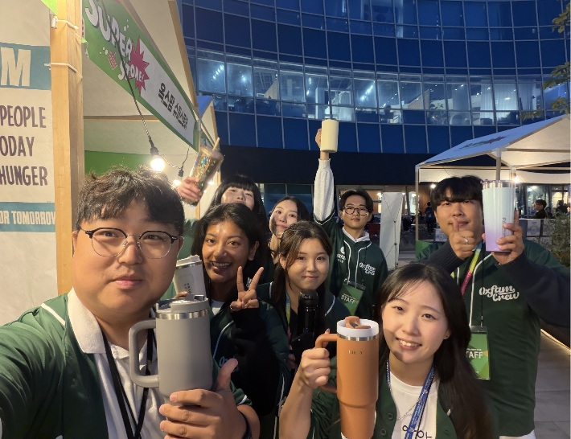
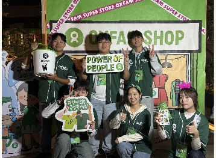
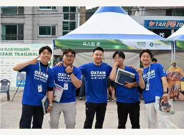
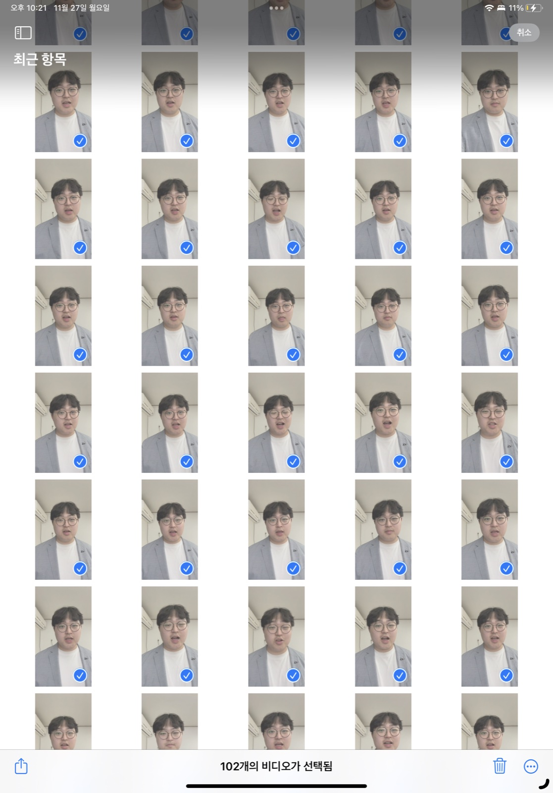
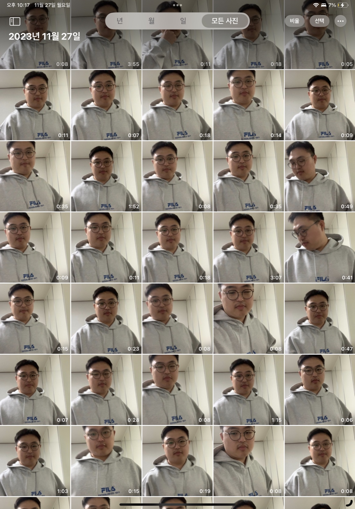
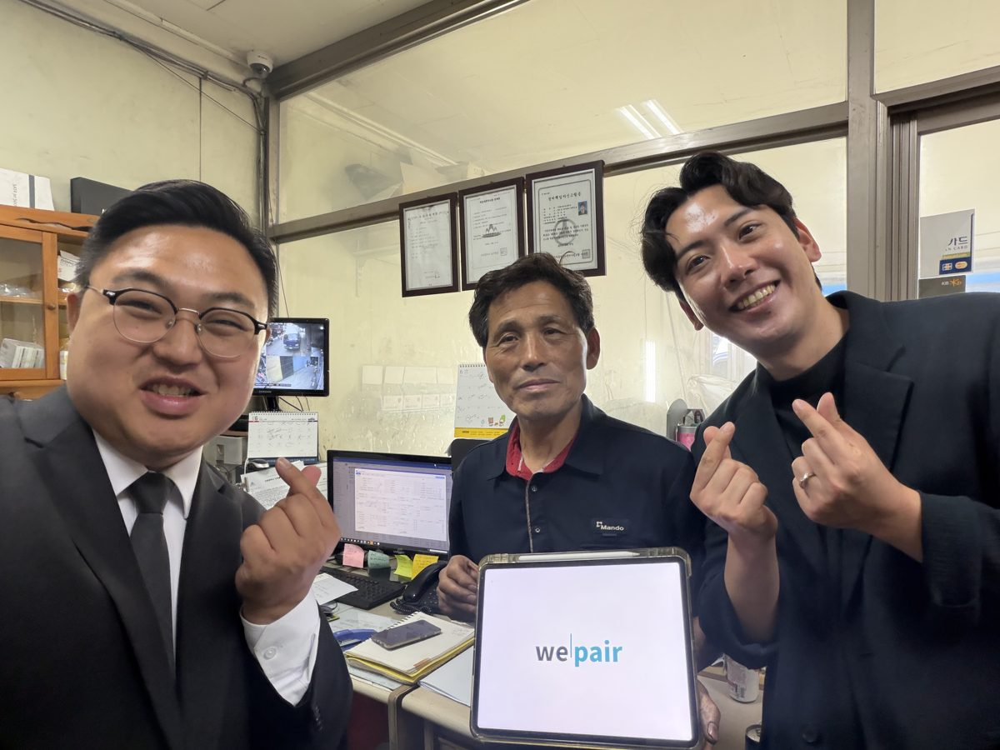
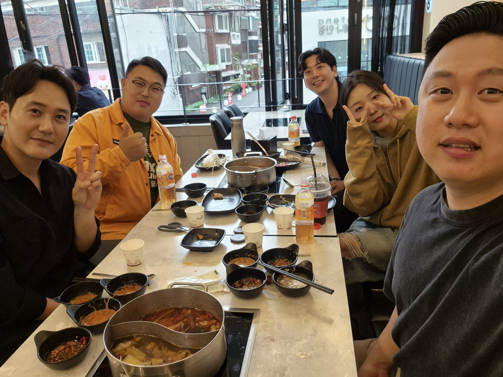

Product
Know Your Product
내가 제안하는 것의 가치PRESENCE EDUCATION / SALES
멋진 세일즈를 위한 3가지
BE YOUR FIRST CUSTOMER
내가 권하는 이유를, 나도 납득하고 있을까?
THE THREE KEYS
Know Your Product
내가 제안하는 것의 가치Know Your Customer
상대의 상황과 필요Know Yourself
나의 매력과 강점BEYOND SALES
THE FIRST KEY
제품을 이해하기 위한 노력
나는 무엇을, 얼마나 알고 제안하고 있을까?
MY PRACTICE / EXPERIENCE
옥스팜 행사와 활동에
가능한 한 폭넓게 참여하기



참여하며 알게 된 내용을, 고객에게 전할 수 있는 이야기로 정리하기
MY PRACTICE / STUDY
여러 채널을 꾸준히 읽고 보며, 내 설명의 근거를 쌓기
이미지: Oxfam Korea · Sharada Bashyal / Oxfam · Oxfam International
PRODUCT CHECK
무엇이 좋고, 어떤 가치를 주는가?
어떤 한계나 고려할 조건이 있는가?
그 조건까지 고려해도, 누구에게 가치 있는가?
THE SECOND KEY
고객을 이해하기 위한 노력
이 사람은 지금 어떤 상황에 있을까?
MY PRACTICE / READING
왜 그렇게 느낄까?
무엇을 중요하게 여길까?
어떤 경험을 해왔을까?
책에서 배운 관점은 질문의 출발점.MY PRACTICE / PERSPECTIVE
시간이 부족한 걸까?
경제적인 부담일까?
설명이 더 필요한 걸까?
추측은 질문으로 확인하고, 상대의 선택을 존중하기
MY PRACTICE / PARTICIPATION
직접 후원에 참여하며, 선택하는 사람의 입장 경험하기
무엇에 마음이 갔나?
무엇이 궁금했나?
무엇을 납득했나?
어떤 안내가 필요했나?
내 경험을 바탕으로 질문하되, 고객의 답은 직접 듣기
THE THIRD KEY
나 자신을 이해하기 위한 노력
내가 생각하는 나와, 상대가 만나는 나는 같을까?
MY PRACTICE / PITCH VIDEO
3일간 촬영한 피치 영상
나를 관찰하기 위해 반복했던 연습
연습 기록 → 실제 피치 영상


MY PRACTICE / CALL BACK SHEET
“신입 IC 때는 다른 사람의 콜백싯만 봐도
그 사람이 하루 필드를 어떻게 뛰었는지
짚어볼 정도로 꼼꼼히 분석했다.”
어떻게 하루를 움직였나?
어디서 대화가 이어지거나 멈췄나?
어떤 행동이 되풀이됐나?
내일 무엇을 달리해볼까?
MY PRACTICE / REFLECTION
다른 시선으로 나를 살펴보기
내 감정과 반응을 알아차리기
내가 자연스럽게 잘하는 방식 발견하기
MY RESULTS / OXFAM & WEPAIR
연간 최다
지난해 1년간
가장 많은 후원자 유치
1년 성과에 10일 만에 근접
본사 자체 세일즈팀이 1년간 만든 성과와 비슷한 수준 달성


MY RESULTS / 잡수새우
지난 명절, 하루 동안 판매한 새우
판매장에 갈 때마다
매출 1위 갱신
YOUR NEXT STEP
특장점과 궁금한 점을 내 말로 정리하기
내가 추측했던 것과 실제 답을 비교하기
살릴 강점 하나, 바꿀 습관 하나 찾기
3 KEYS TO GREAT SALES
제품, 고객, 나를 이해하며 쌓아온 판매력
THANK YOU